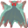

Anoa¶Where to find Anoa: undertell_3_02
{ .sprite }
| Type | NPC/Enemy (can be spoken to, but can also be fought) |
| Role | Starts Devotion |
| Found in | undertell_3_02 |
| Class | Ghost |
| HP | 545 |
| XP when defeated | 2,455 |
| Immune to critical hits | Yes |
| Entry ID | anoa |
| Introduced | v0.8.18 |
Can be fought
This entry can be talked to, but it can also become an opponent: a conversation with this character can end in combat (a dialogue branch leads to a fight).
Combat statistics¶
| Statistic | Value |
|---|---|
| Class | Ghost |
| HP | 545 |
| XP when defeated | 2,455 |
| Damage | 8 to 10 |
| Attack chance | 235 |
| Block chance | 517 |
| Damage resistance | 0 |
| Max AP | 10 |
| Attack cost | 6 AP |
| Attacks per turn | 1 |
| Move cost | 3 AP |
| Critical skill | 10 |
| Critical multiplier | 1.5 |
| Critical hit chance | 9% |
Immune to critical hits
Ghosts, constructs and demons cannot receive critical hits.
On hit: On self: Shadow awareness (magnitude 1, 1 round); On target: Shadow sleepiness (magnitude 1, 1 round, 25% chance)
When hit: On self: Shadow Regeneration (magnitude 10, 1 round); On target: Kazaul possession (magnitude 3, 2 rounds, 50% chance)
Verified against v0.8.18 monster data and game code (`MonsterTypeParser.java`).
Locations¶
| Map | Region | Up to | Notes |
|---|---|---|---|
| undertell_3_02 | – | 1 | – |
Quests that count defeats¶
- A conversation with stepping on a trigger on undertell_3_02 checks that this enemy has been defeated.
Quests¶
- Devotion: stages 20, 40, 60, 80, 110, 450, 470
- hidden_devotion (hidden flag): stage 450
Dialogue simulator¶
Set the quest stages, items and other conditions that apply to your game, then start the conversation with Anoa. The simulator applies the game's own rules: it performs the same silent checks, offers only the options that would be shown in the game, and applies their effects (quest stages, items handed over, rewards) as the conversation proceeds.
Rules verified against v0.8.18 game code (ConversationController.java) and dialogue data.
Dialogue (56 lines)
What the dialogue says, exactly as in the game files. Lines are listed once; links jump to the line a choice leads to.
anoa_selector (silent check: the first matching branch below is taken)
- Next (if reached stage 470 of Devotion) → anona_fight
- branch 2 (if faction “shadeKillCount” = 11) → anoa_11_shades_killed_10
- branch 3 (if faction “shadeSetFreeCount” = 11) → anoa_one_plus_shades_freed_10
- branch 4 (if faction “shadeSetFreeCount” = 10; faction “shadeKillCount” = 1) → anoa_one_plus_shades_freed_10
- branch 5 (if faction “shadeSetFreeCount” = 9; faction “shadeKillCount” = 2) → anoa_one_plus_shades_freed_10
- branch 6 (if faction “shadeSetFreeCount” = 8; faction “shadeKillCount” = 3) → anoa_one_plus_shades_freed_10
- branch 7 (if faction “shadeSetFreeCount” = 7; faction “shadeKillCount” = 4) → anoa_one_plus_shades_freed_10
- branch 8 (if faction “shadeSetFreeCount” = 6; faction “shadeKillCount” = 5) → anoa_one_plus_shades_freed_10
- branch 9 (if faction “shadeSetFreeCount” = 5; faction “shadeKillCount” = 6) → anoa_one_plus_shades_freed_10
- branch 10 (if faction “shadeSetFreeCount” = 4; faction “shadeKillCount” = 7) → anoa_one_plus_shades_freed_10
- branch 11 (if faction “shadeSetFreeCount” = 3; faction “shadeKillCount” = 8) → anoa_one_plus_shades_freed_10
- branch 12 (if faction “shadeSetFreeCount” = 2; faction “shadeKillCount” = 9) → anoa_one_plus_shades_freed_10
- branch 13 (if faction “shadeSetFreeCount” = 1; faction “shadeKillCount” = 10) → anoa_one_plus_shades_freed_10
- branch 14 (if reached stage 110 of Devotion; NOT reached stage 470 of Devotion; NOT reached stage 450 of Devotion; NOT reached stage 480 of Devotion) → anoa_after_ring_after_orders
- branch 15 (if reached stage 100 of Devotion; NOT reached stage 110 of Devotion; carry 1× Elythara's ring) → anoa_after_ring_10
- branch 16 (if reached stage 100 of Devotion; NOT reached stage 110 of Devotion; wearing Elythara's ring) → anoa_after_ring_10
- branch 17 (if NOT carry 1× Elythara's ring; reached stage 100 of Devotion; NOT reached stage 110 of Devotion) → anoa_forgot_ring_10
- branch 18 (if NOT wearing Elythara's ring; reached stage 100 of Devotion; NOT reached stage 110 of Devotion) → anoa_forgot_ring_10
- branch 19 (if latest stage of Devotion is 90) → anoa_forgot_ring_10
- branch 20 (if reached stage 70 of Devotion; NOT reached stage 90 of Devotion) → anoa_third_return_10
- branch 21 (if reached stage 50 of Devotion; NOT reached stage 70 of Devotion) → anoa_second_return_10
- branch 22 (if reached stage 30 of Devotion; NOT reached stage 50 of Devotion) → anoa_first_return_10
- branch 23 (if NOT reached stage 30 of Devotion) → anoa_welcome
anona_fight Anoa: “Now, no thanks to you, my soul has become reinfected, and we shall lay Dhayavar to waste, starting with you.”
- “Today, you will be removed from this world.” → fight starts
anoa_11_shades_killed_10 Anoa: “Good work, my friend. You have saved Dhayavar.”
- Next → anoa_11_shades_killed_20
anoa_one_plus_shades_freed_10 (silent check: the first matching branch below is taken)
- branch 1 (if wearing Elythara's ring) → anoa_one_plus_shades_freed_15
- branch 2 → anoa_one_plus_shades_freed_12
anoa_after_ring_after_orders Anoa: “I told you already, wear the ring that the Holy One give you if you want to overcome the resistance of the Kha'zaan shades.”
- “Oh, yeah. I will try that now.” → conversation ends
anoa_after_ring_10 Anoa: “So the Holy One gave you a ring.”
- Next → anoa_after_ring
anoa_forgot_ring_10 Anoa: “The Holy One gave you a relic did it not? Bring it to me.”
anoa_third_return_10 Anoa: “You are back once more!”
- “It is no use. They are just making me disoriented. Maybe I should give up?” → anoa_third_return_20
anoa_second_return_10 Anoa: “You're back again without the job being completed?”
- “No luck. I'm still getting thrown out of the caverns.” → anoa_second_return_20
anoa_first_return_10 Anoa: “You're back so soon?”
- “I'm getting thrown out of Undertell.” → anoa_first_return_20
anoa_welcome Anoa: “Why did you have to come here?”
- “I'm seeking my brother.” (if NOT reached stage 20 of Devotion) → anoa_intro_10
- “I need clarity. What am I supposed to be doing?” (if latest stage of Devotion is 20) → anoa_clarity_10
anoa_11_shades_killed_20 Anoa: “You shall have your reward. But first you shall know my secret: I was the twelfth shade.”
- “W-w-what?” → anoa_11_shades_killed_30
anoa_one_plus_shades_freed_15 Anoa: “What have you done? Don't you realize the evil you have unleashed. Thanks to an Elytharan mage, my soul which was to be liberated, is now getting reinfected.”
- “Liberated?” → anoa_one_plus_shades_freed_20
anoa_one_plus_shades_freed_12 Anoa: “Wear the ring that the Holy One give you if you want to talk to me.”
- “Oh, you now too? Let me put it on now.” → conversation ends
anoa_after_ring Anoa: “Wear it if you want to overcome the resistance of the Kha'zaan shades. It should let you get past their safeguards.” — effects: sets stage 110 of Devotion, faction “shadeSetFreeCount” set to 0, faction “shadeKillCount” set to 0
- “I will try.” → conversation ends
anoa_third_return_20 Anoa: “Not if you want to save your brother, your family and Dhayavar.”
- “So, what do I do?” → anoa_third_return_30
anoa_second_return_20 Anoa: “Try once more.” — effects: sets stage 60 of Devotion
anoa_first_return_20 Anoa: “Try again. Harder this time.” — effects: sets stage 40 of Devotion
anoa_intro_10 Anoa: “You foolish child! Long were buried here the evil souls of the Kha'zaan. No one was to come here near these shades. Now your presence shall free them to wreak havoc on Dhayavar.”
- “What are you talking about?” → anoa_story_20a
anoa_clarity_10 Anoa: “You foolish child. Buried here are the shades of the Kha'zaan. You must destroy them.”
- “Huh?” → anoa_story_20a
anoa_11_shades_killed_30 Anoa: “Worry not, fear not - I shall not harm you. When I said that in the confusion of the War, us shades hid, that's not strictly true. An Elytharan mage caught up with me, who was about to be the last to hide. She could have killed us, but I…”
- Next → anoa_11_shades_killed_40
anoa_one_plus_shades_freed_20 Anoa: “What you don't realize is that I was the twelfth shade.”
anoa_third_return_30 Anoa: “Let me think...”
- “Alright...” → anoa_third_return_40
anoa_story_20a Anoa: “Child, if you knew the history of the world of Dhayavar, you would know how this place came to be. How the Lethgar were subjugated to Kazaul's will. How a few of the Lethgar became interested in the Dark Sorcery of Kazaul.”
- “That was the past.” → anoa_story_20b
anoa_11_shades_killed_40 Anoa: “Instead she told me: "Until now, you have sustained fantasies in which you are the adventurers in magic, the pioneers in a new form of magic. Comforting daydreams in which you are always right. But no more. The fantasy is over. I have…”
- Next → anoa_11_shades_killed_50
anoa_one_plus_shades_freed_30 Anoa: “When we were about to go into hiding, an Elytharan mage caught up with me. She stripped away my fantasies of being a pioneer in a new type of magic: Kazaul's magic, and laid bare what I had become - a monster.”
anoa_third_return_40 Anoa: “In the town of Sullengard, there is a statue of Elythara. Pray to her for aid.”
- “That is the statue of Elythara? So close to Nor City?” → anoa_third_return_50
anoa_story_20b Anoa: “The past is never dead. It is not even past.”
- “Spare me the riddles.” → anoa_story_20c
anoa_11_shades_killed_50 Anoa: “Her spell stripped away my justifications. It made me realize what a monster I was.”
- Next → anoa_11_shades_killed_60
anoa_one_plus_shades_freed_30_selector (silent check: the first matching branch below is taken)
- branch 1 (if faction “shadeSetFreeCount” = 11) → anoa_shades_freed_11
- branch 2 (if faction “shadeSetFreeCount” = 10) → anoa_shades_freed_10
- branch 3 (if faction “shadeSetFreeCount” = 9) → anoa_shades_freed_9
- branch 4 (if faction “shadeSetFreeCount” = 8) → anoa_shades_freed_8
- branch 5 (if faction “shadeSetFreeCount” = 7) → anoa_shades_freed_7
- branch 6 (if faction “shadeSetFreeCount” = 6) → anoa_shades_freed_6
- branch 7 (if faction “shadeSetFreeCount” = 5) → anoa_shades_freed_5
- branch 8 (if faction “shadeSetFreeCount” = 4) → anoa_shades_freed_4
- branch 9 (if faction “shadeSetFreeCount” = 3) → anoa_shades_freed_3
- branch 10 (if faction “shadeSetFreeCount” = 2) → anoa_shades_freed_2
- branch 11 (if faction “shadeSetFreeCount” = 1) → anoa_shades_freed_1
anoa_third_return_50 Anoa: “Sullengard is a riddle bound in contradiction. Though it stands as the southernmost town sworn to the light of Elythara, it does not bend the knee to Feygard. Its people hold Feygard in quiet contempt, for its levies, its corruptions, its…”
- “And me praying will not kick a hornet's nest?” → anoa_third_return_60
anoa_story_20c Anoa: “As you wish. So those Lethgar who were interested in the Dark Sorcery became none other than the Kha'zaan. Word spread that the Kha'zaan, through their devotion, were among the strongest followers of Kazaul.”
- “The Kha'zaan were defeated in the War of Dawn, weren't they?” → anoa_story_20d
anoa_11_shades_killed_60 Anoa: “Then she said - when your erstwhile colleagues, who hide now, are neutralized, you shall find peace. So $playername, thank you for liberating me.”
- “What happens now?” → anoa_ring_check_10
anoa_shades_freed_11 Anoa: “Now, no thanks to you, my soul has become reinfected, and we shall lay Dhayavar to waste, starting with you.” — effects: sets stage 470 of Devotion, spawns monsters on undertell_3_02
- “I was hoping that it wouldn't come to this.” → fight starts
anoa_shades_freed_10 Anoa: “Now, no thanks to you, my soul has become reinfected, and we shall lay Dhayavar to waste, starting with you.” — effects: sets stage 470 of Devotion, spawns monsters on undertell_3_02
- “I was hoping that it wouldn't come to this.” → fight starts
anoa_shades_freed_9 Anoa: “Now, no thanks to you, my soul has become reinfected, and we shall lay Dhayavar to waste, starting with you.” — effects: sets stage 470 of Devotion, spawns monsters on undertell_3_02
- “I was hoping that it wouldn't come to this.” → fight starts
anoa_shades_freed_8 Anoa: “Now, no thanks to you, my soul has become reinfected, and we shall lay Dhayavar to waste, starting with you.” — effects: sets stage 470 of Devotion, spawns monsters on undertell_3_02
- “I was hoping that it wouldn't come to this.” → fight starts
anoa_shades_freed_7 Anoa: “Now, no thanks to you, my soul has become reinfected, and we shall lay Dhayavar to waste, starting with you.” — effects: sets stage 470 of Devotion, spawns monsters on undertell_3_02
- “I was hoping that it wouldn't come to this.” → fight starts
anoa_shades_freed_6 Anoa: “Now, no thanks to you, my soul has become reinfected, and we shall lay Dhayavar to waste, starting with you.” — effects: sets stage 470 of Devotion, spawns monsters on undertell_3_02
- “I was hoping that it wouldn't come to this.” → fight starts
anoa_shades_freed_5 Anoa: “Now, no thanks to you, my soul has become reinfected, and we shall lay Dhayavar to waste, starting with you.” — effects: sets stage 470 of Devotion, spawns monsters on undertell_3_02
- “I was hoping that it wouldn't come to this.” → fight starts
anoa_shades_freed_4 Anoa: “Now, no thanks to you, my soul has become reinfected, and we shall lay Dhayavar to waste, starting with you.” — effects: sets stage 470 of Devotion, spawns monsters on undertell_3_02
- “I was hoping that it wouldn't come to this.” → fight starts
anoa_shades_freed_3 Anoa: “Now, no thanks to you, my soul has become reinfected, and we shall lay Dhayavar to waste, starting with you.” — effects: sets stage 470 of Devotion, spawns monsters on undertell_3_02
- “I was hoping that it wouldn't come to this.” → fight starts
anoa_shades_freed_2 Anoa: “Now, no thanks to you, my soul has become reinfected, and we shall lay Dhayavar to waste, starting with you.” — effects: sets stage 470 of Devotion, spawns monsters on undertell_3_02
- “I was hoping that it wouldn't come to this.” → fight starts
anoa_shades_freed_1 Anoa: “Now, no thanks to you, my soul has become reinfected, and we shall lay Dhayavar to waste, starting with you.” — effects: sets stage 470 of Devotion, spawns monsters on undertell_3_02
- “I was hoping that it wouldn't come to this.” → fight starts
anoa_third_return_60 Anoa: “No one will notice. Except maybe a few kids.”
- “What should I pray for?” → anoa_third_return_70
anoa_story_20d Anoa: “Devotion. Remember that word. It holds more power than you think.”
- “What does that mean?” → anoa_story_20e
anoa_ring_check_10 Anoa: “Before I depart, child...the blessing must be passed on. Give me the ring granted by the Holy One.”
- “Here it is.” (if hand over 1× Elythara's ring) → anoa_ring_upgrade_10
- “Let me remove it first.” (if wearing (and give up) Elythara's ring) → anoa_ring_upgrade_10
- “I dropped it.” (if NOT carry 1× Elythara's ring; NOT wearing Elythara's ring) → anoa_dropped_ring_10
anoa_third_return_70 Anoa: “O Holy One, Preserve Us.” — effects: sets stage 80 of Devotion
- “On my way.” → conversation ends
anoa_story_20e Anoa: “Through devotion, even if the Kha'zaan lost their corporeal forms, they became incorporeal shades. And survived.”
- “How did they stay hidden?” → anoa_story_20f
anoa_ring_upgrade_10 Anoa: “As you have truly vanquished the Kha'zaan and resisted their whispers, Elythara grants her favor. Through this ring, her blessing now flows anew.” — effects: gives 1× Elythara's ring, sets stage 450 of Devotion, removes monsters from undertell_3_02, sets stage 450 of hidden_devotion (hidden flag), spawns monsters on undertell_3_00, spawns monsters on undertell_3_01, spawns monsters on undertell_3_11, spawns monsters on undertell_3_12, spawns monsters on undertell_3_13, spawns monsters on undertell_3_03, spawns monsters on undertell_3_02
- “Thank you, Anoa.” → conversation ends
anoa_dropped_ring_10 Anoa: “Child...you cast aside the Holy One's blessing? Retrieve the ring from where you left it. Only then can I complete what must be done.”
- “I'll go get it.” → conversation ends
anoa_story_20f Anoa: “During the confusion of the War, this section was overlooked. As the Elytharan mages cleansed Dhayavar, the war reached Undertell and was fought in these passages. Spells and counterspells everywhere. In this confusion, the shades hid…”
- “Let them be. I will just search for my brother Andor and get out. Tell me what to avoid.” → anoa_story_20g
anoa_story_20g Anoa: “If only it were that simple. These shades gain strength from the life force of the living. As no one has come here, and you are the first, they shall awaken. The longer you stay, the stronger they will grow. Soon enough they will escape…”
- “What do I need to do?” → anoa_story_20h
anoa_story_20h Anoa: “You must destroy each shade you encounter in this cavern. There were twelve who hid here. You should find eleven of them still around.”
- “What happened to the twelfth?” (if NOT reached stage 20 of Devotion) → anoa_story_20i
- “Before I leave...who are you?” (if reached stage 20 of Devotion) → anoa_who_are_you_10
anoa_story_20i Anoa: “There is not much time to tell you more. The shades grow stronger. Go hunt them! May Elythara bless you.” — effects: sets stage 20 of Devotion, spawns monsters on undertell_3_02, spawns monsters on undertell_3_02, spawns monsters on undertell_3_12, spawns monsters on undertell_3_12, spawns monsters on undertell_3_13, spawns monsters on undertell_3_11, spawns monsters on undertell_3_00, spawns monsters on undertell_3_00, spawns monsters on undertell_3_00, spawns monsters on undertell_3_10, spawns monsters on undertell_3_03
- “Before I leave...who are you?” → anoa_who_are_you_10
anoa_who_are_you_10 Anoa: “Child, I will tell you later. Not enough time to tell you. Go hunt!”
- “Fine.” → conversation ends
Version history¶
| Version | Change |
|---|---|
| v0.8.18 | Added Dialogue: 56 lines added |
Verified against v0.8.18 and every earlier release back to v0.7.0 (game data compared release by release).
Technical information
| Entry ID | anoa |
| Spawn group | help_anoa |
| Loot table | – |
| Conversation | anoa_selector |
| Faction | – |
| Movement | helpOthers |
| Icon | monsters_newb_1:641 |
| Defined in | res/raw/monsterlist_undertell.json |
Raw data:
{
"id": "anoa",
"name": "Anoa",
"iconID": "monsters_newb_1:641",
"maxHP": 545,
"moveCost": 3,
"unique": 1,
"monsterClass": "ghost",
"movementAggressionType": "helpOthers",
"attackDamage": {
"min": 8,
"max": 10
},
"spawnGroup": "help_anoa",
"phraseID": "anoa_selector",
"attackCost": 6,
"attackChance": 235,
"criticalSkill": 10,
"criticalMultiplier": 1.5,
"blockChance": 517,
"hitEffect": {
"conditionsSource": [
{
"condition": "shadow_awareness",
"magnitude": 1,
"duration": 1,
"chance": "100"
}
],
"conditionsTarget": [
{
"condition": "shadowsleep",
"magnitude": 1,
"duration": 1,
"chance": "25"
}
]
},
"hitReceivedEffect": {
"conditionsSource": [
{
"condition": "regen",
"magnitude": 10,
"duration": 1,
"chance": "100"
}
],
"conditionsTarget": [
{
"condition": "kazarite_misery",
"magnitude": 3,
"duration": 2,
"chance": "50"
}
]
}
}
How the XP value is calculated
The game computes each enemy's experience value when it loads the data (MonsterTypeParser.java):
XP = ⌈(attacks per turn × attack chance × average damage × (1 + critical skill × critical multiplier) × 3 + HP × (1 + block chance) + 9 × damage resistance) × 0.7⌉
Percentages are used as fractions (e.g. 60% = 0.6). Enemies whose attacks inflict a condition are worth 50 XP more. The More Exp skill adds a percentage on top.
Community notes¶
Written by players, not generated from game data. Observations: what players notice in-game · Lore: the in-world story · Trivia: real-world facts, references, development history · Theory / speculation: unconfirmed ideas; may just be unfinished content
Observations¶
No notes yet. Contributions are welcome: add a note.
Lore¶
No notes yet. Contributions are welcome: add a note.
Trivia¶
No notes yet. Contributions are welcome: add a note.
Theory / speculation¶
No notes yet. Contributions are welcome: add a note.
Data from v0.8.18